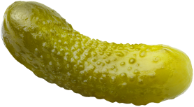

Встречайте сразу три
новых вкуса
новых вкуса
Творожный сыр
с маринованными огурцами
Этот вкус порадует всех любителей солененького! Сыр нежной кремовой текстурой
и пряными
нотками маринованных огурчиков не оставит равнодушным. Он легко распределяется
по ломтику
ржаного хлеба или хрустящему тосту и дарит бутерброду свежий, слегка соленый вкус.




Творожный сыр «Овощи-гриль»
Если вы любите сочные овощи с ароматом дымка, то этот вкус для вас!
Текстура
здесь
сочетается с яркими нотами запеченных овощей и ноткой пикантной паприки!
С этим сыром можно
приготовить аппетитные закуски для семейного застолья: например, блинные рулетики
с зеленью.
Творожный сыр с чесноком
Этот вкус порадует всех любителей солененького! Сыр нежной кремовой текстурой
и пряными
Если вы ценитель пикантных вкусов, то этот сыр для вас! Он приготовлен
из натурального молока, сливок и настоящего чеснока, поэтому у него такой
насыщенный сливочно-чесночный вкус. Этот сыр прекрасно подойдет к хрустящим хлебцам


Создай свой идеальный
завтрак с Хохланд
завтрак с Хохланд
{{currentQuestion.question}}
{{answer.letter}}.
{{answer.text}}
Ответить

Ваш идеальный завтрак!
{{resultType.resTitle}}
Вам понадобятся:
{{ingredient.name}}
—
{{ingredient.count}}
Как готовить:
{{index +1}}.
{{cookingProcessItem}}
Пройти ещё раз
Внимание,
конкурс
«Сначала сфоткай, потом съешь»

О конкурсе
Теперь, когда вы знаете, как приготовить идеальный завтрак с сыром Хохланд, пришло время проверить это на практике. Объявляем конкурс на лучшую фотографию вашего любимого завтрака с новыми вкусами Хохланд.
Призы получат участники конкурса, чьи фотографиизаймут 1,2 и 3 место по количеству лайков.
Условия просты
Выберите рецепт, который подходит вашему типу личности
по итогам
теста.
Приготовьте это блюдо, используя творожные новинки
от «Хохланд»
Сфотографируйте готовый завтрак (совет: отнеситесь к задаче
творчески, это повысит ваши шансы на победу).
Расскажите, сколько времени ушло на готовку, и каким
завтрак оказался на вкус.
Ждите лайки от восторженных коллег
Призы
Остались
вопросы?
вопросы?
Заполни форму и мы
с радостью проконсультируем, развеем тревоги и сомнения :)
с радостью проконсультируем, развеем тревоги и сомнения :)